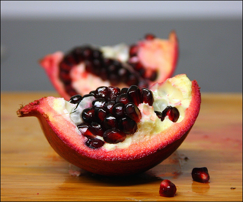
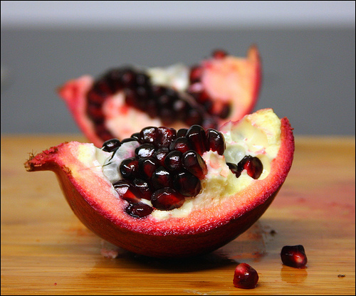

Exercise |
Days |
Motivation |
|---|---|---|
Aerobic |
Mon, Wed, Fri |
Warmup |
Stretching |
Mon, Wed, Fri |
Preparation |
Weight Training |
Mon, Wed, Fri |
Increased blood flow |
Nutrition |
Monday - Sunday |
Recovery, Energy |
| Food | Serving | Grams Of Protein | Frozen Spinach | |
|---|---|---|---|---|
Hamburger |
6 ounces |
48 |
Yes |
|
Chicken |
6 ounces |
43 |
Yes |
|
Fish |
6 ounces |
42 |
Yes |
|
Turkey Breast |
3.5 ounces |
30 |
Yes |
|
Sophia Kamveris |
Shapefit.com |
Registered Dietitian |
MS, RD; LD |
The following are products to enhance your physical fitness experience
Yogurt- Acts as a laxative
Jello- Dessert, few if any calories
Soy- raises testosterone levels in males over 30 years of age
Amp Amplified 100% Whey Protein, contains milk soybeans and wheat; essential for recovery
Maybe no one will see this, I'm putting it here because it will change the way a bench presser uses the bench press, use cables,
Grab ropes with handles turn away from the pulleys and pull outward; over your headThen return to starting positon
Make a point of doing high reps 40, 50; 60, 100 Skull Crushers Cables
15 to 25 lbs per cable handle use cables at high** and low* notches
Watch how your bench press improves,Top of the page